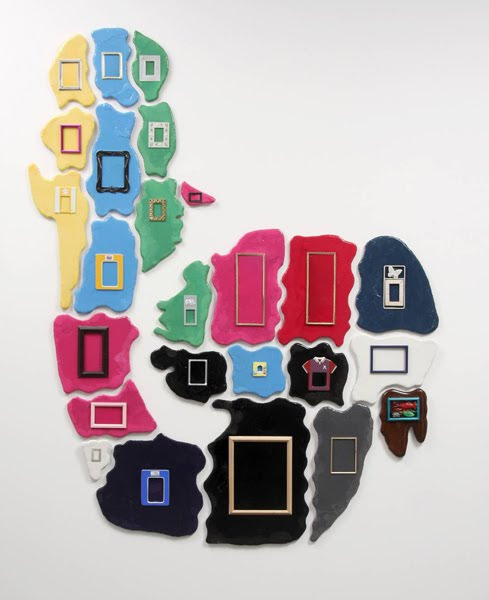

Accordin' to this story, all the dogs in the world held a convention back in the beginning of time, their purpose being to set up a code of conduct, like maybe it shouldn't be fair to bite each other in the balls and so on. And there was this one dog that had a copy of Robert's Rules of Order that he'd got somewhere, prob'ly at the same place Cain got his wife. So he automatically became chairman, and the first thing he does is to declare the entire convention a committee of the hole. "Fellas," he says, "canines of the convention. I don't want to tread on no honorable dogs' paws, so I'll just put it this way. When we go back in them smoke-filled rooms to caucus, I'm sure we don't want to smell nothin' but smoke, and the best thing to do it seems to me is to pile our assholes outside, and if someone will make a motion to that effect, I'll be glad to put a second on it." Well, sir, it seemed like such a danged good idea that every dog in the convention jumped up to make the motion, so the chairman declared it was passed by acclamation, and there was a brief recess while all the dogs went outside to stack up their assholes. Then, they went back inside t'carry out their business. And god-danged if a heck of a storm didn't blow up out of nowhere, and it scattered them assholes every which way, mixin' em up so bad that not a one of them dogs was ever able to find his own. So that's why they go around sniffing butts, and they'll probably keep on until the end of time. Because a dog that's lost his ass just can't be happy, even if one of 'em is pretty much like another, and the one he has is in good working order.
Justin Lieberman
Deep Gap, NC
2014
June 14 - August 10
Opening Saturday, June 14: 6-8PM
Rowhouse Project
2640 Huntingdon Ave
Remington, Baltimore
Hours: Sunday 4-8PM & by appointment
Martos Gallery
540 West 29th Street
New York, NY
10001
212-560-0670